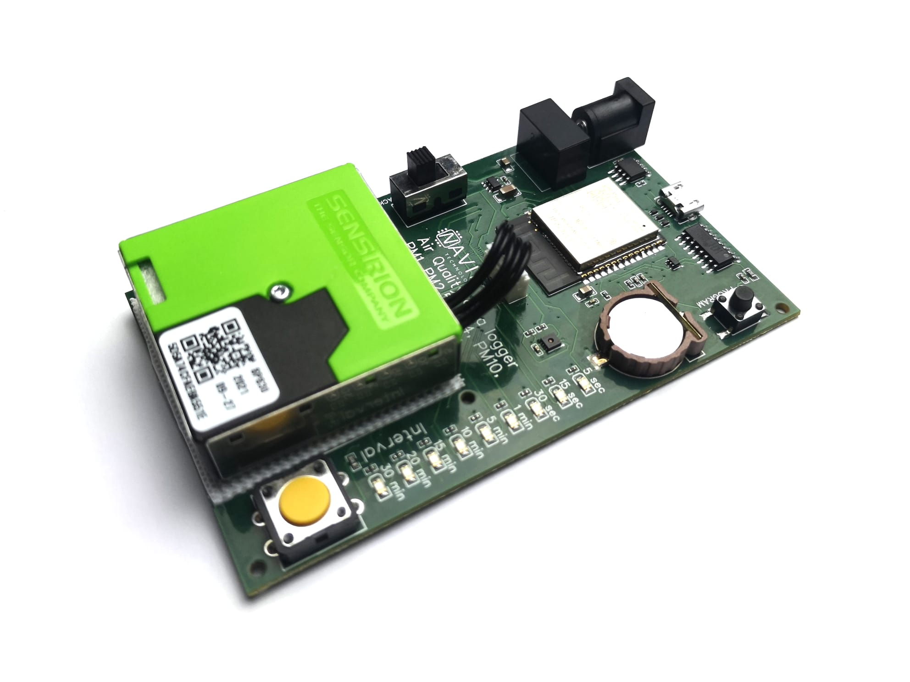
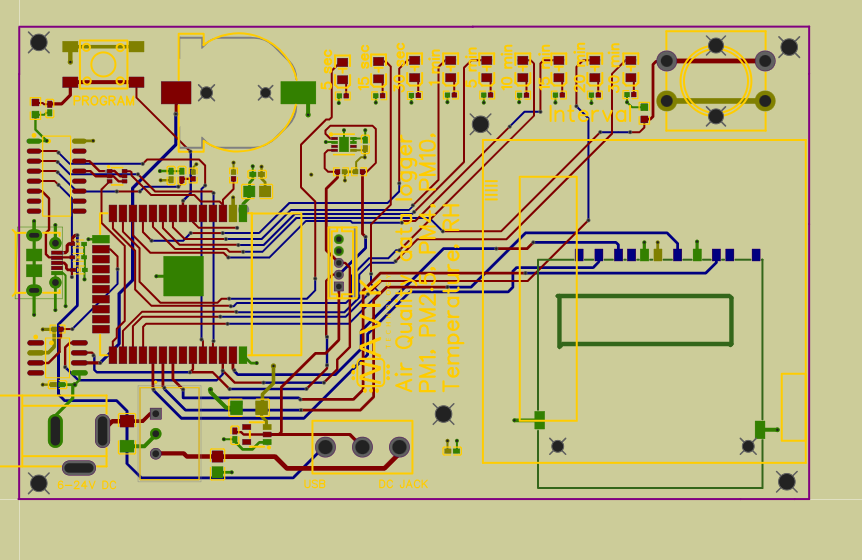

Environmental Particulate Monitor
SPS30 PM sensor · ESP32 · SD logging · RTC timestamping · Dual power (USB + DC jack)
Summary
A standalone particulate matter monitoring node built around the Sensirion SPS30 sensor and an ESP32 MCU. The system supports dual-input power (USB 5 V and DC jack), logs timestamped measurements to a microSD card using an RTC, and provides a simple user interface to select sampling frequency via a push button with LED indication of the active mode.
Note: This project focuses on reliable local logging (no cloud/Wi-Fi dependency).
Board images

Schematic excerpts

System architecture
- Sensor: Sensirion SPS30 particulate matter sensor (digital interface).
- MCU: ESP32 (used here as a robust controller; Wi-Fi not required for core operation).
- Storage: microSD card logging (SPI).
- Timekeeping: RTC used to timestamp every measurement.
- User interface: push button to cycle sampling modes + LEDs to indicate selected mode.
- Power: USB 5 V + DC jack input with source isolation and regulated rails.
Power design (USB + DC jack)
The board accepts either USB 5 V or an external DC input. The power front-end is designed to prevent backfeeding between sources and to provide stable rails for both low-noise sensing and bursty digital loads (ESP32 activity and SD card writes).
- Input source handling: isolation/OR-ing strategy to prevent backfeed.
- Protection intent: robustness against hot-plug and basic transients at the connector.
- Regulation: 3.3 V domain sized for MCU + SD write bursts; stable supply to sensor domain.
- Layout intent: keep high-current loops short and away from sensitive interfaces.
Sensor integration (SPS30)
SPS30 integration focuses on reliable digital communications and stable power. Routing and placement are chosen to reduce coupling from fast digital edges into the sensor interface and to keep the design practical for enclosure integration (airflow/placement considerations).
- Digital interface routing kept short and tidy.
- Local decoupling at the sensor supply pins.
- Connector/enclosure considerations for airflow and mounting (if applicable).
Data logging (microSD)
Measurements are logged locally to a microSD card to keep the system independent of network connectivity. Data is stored in a simple structured format (e.g., CSV) with RTC timestamps.
- Interface: SPI-based SD card interface.
- Reliability: file write strategy designed to reduce corruption risk.
- Electrical: decoupling near SD socket to support write current bursts.
RTC timestamping
An RTC provides consistent timestamps for every measurement, ensuring the dataset remains meaningful even if the device is deployed without network time.
- Timestamp recorded per sample / per log entry.
- Battery-backed timekeeping (if implemented) to maintain time across power cycles.
User interface: selectable sampling frequency
A push button cycles through predefined sampling modes (e.g., fast/normal/slow). LEDs provide immediate feedback of the active mode without requiring a screen.
- Debounced button handling with deterministic state transitions.
- LED indication mapped to sampling modes for clarity.
Validation
- Verified stable boot and operation on both USB and DC input.
- Confirmed SD logging stability over extended runs.
- Checked mode switching behaviour and LED indications.
- Validated RTC timestamp correctness against a reference time source.
Improvements for next revision
- Optional power measurement (rail current/voltage logging) for profiling.
- Improved ESD protection at external connectors if used in harsher environments.
- Further optimisation of low-power modes (sleep strategy) if battery operation is a target.